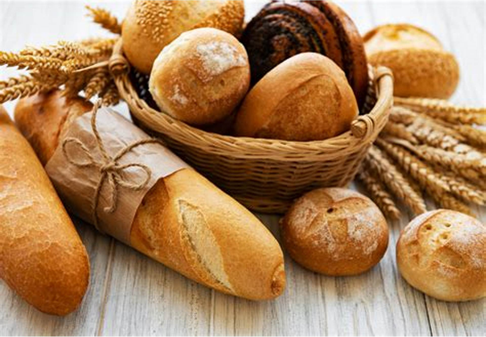

¿Desayunamos?

¿Qué es el café?
Denominamos como tal la bebida obtenida mediante la infusión realizada con los granos tostados (sean enteros o molidos) del cafeto o planta del café, un pequeño arbusto originario de África y Asia y que posteriormente se ha ido exportando a todo el mundo. De gusto amargo e intenso, se trata de un producto alto en cafeína, la cual tiene propiedades estimulantes y activadoras para nuestro organismo.
Café arábica
El tipo de café que más se utiliza y a su vez que más apreciado resulta es el que se corresponde con las primeras variantes utilizadas para elaborar la bebida: el café arábica. Esta especie procedente de Etiopía y con varias subespecies tiende a ser delicada y a proporcionar un grano con un sabor muy aromático y una cantidad considerable pero menor a la otra variedad existente en cuanto a nivel de cafeína. Pese a su origen africano en la actualidad suele ser más cultivado en los países de Sudamérica, Asia y Centroamérica.
Café robusta
Si bien tiende a ser menos utilizado a nivel general, esta variedad posee la importante característica de tener un nivel mucho más elevado de cafeína que el anterior, algo que provoca que el sabor que produce a la hora de beberse sea mucho más intenso. y con tono bastante más amargo.
Combinaciones
Una gran parte de los cafés que nos tomamos no proceden únicamente de una de las dos especies anteriores y sus variedades, sino que por lo general nos encontramos ante una mezcla en diferentes proporciones de ambas. La proporción exacta puede depender entre otras cosas del tipo de elaboración que se pretende realizar.
¿Qué es el pan?
Se denomina pan al alimento perecedero que resulta de cocinar una masa, la cual se obtiene mediante la mezcla de ingredientes tales como harina, sal y levadura. Esta última es la que se encarga de fermentar esta mezcla con microorganismos propios de una fermentación panadearía.
Tipos de pan
Pan común: se trata de un pan al que se le agregan ingredientes y aditivos establecidos y autorizados. Estos panes pueden ser variados pero no deben agregárseles ingredientes tanto como saborizantes o colorantes, por ejemplo: pan de miga dura, pan español o candeal, etc.
Pan especial: a este pan se le han agregado aditivos, es decir, se ha utilizado para su preparación harina enriquecida, leche, huevo, saborizantes, etc. También, en su elaboración, interviene la mano del cocinero dándole una forma y tamaño característico para cada variedad. Entre los mas conocidos es posible encontrar:
Puede ser clasificado, también, según la harina que se utilice en su elaboración:
Pan de trigo: Es el más utilizado por las propiedades del trigo.
Pan de centeno: este pan es consumido en áreas donde predomina un ambiente frío, ya que el centeno soporta muy bien bajas temperaturas. El centeno es el segundo cereal con mayor cantidad de gluten, pero se pone rancio con mucha facilidad por lo que se le agrega harina de trigo y algunas semillas para realzar el sabor
Pan de avena: No es común encontrar un pan hecho enteramente de avena, ya que carece de gluten. Pero es muy probable agregarle a una mezcla granos de avena para utilizar un sabor nuevo, una textura diferente, etc. Es muy utilizada en sector pastelería y confitería.
El sabor dulce
Es uno de los cinco sabores básicos que conocemos y uno de los pocos que se percibe de la misma forma globalmente. El dulce es un tipo de sabor presente especialmente en los alimentos con presencia importante de azúcares, una de las sustancias dulces por excelencia. Aunque también en productos con derivados de este o en aquellos otros con un alto contenido de carbohidratos, glucosa y glucógeno.
Especialmente este sabor se percibe en la punta de la lengua, aunque se detecta en el resto de nuestro órgano con facilidad, domina de forma natural alimentos de origen vegetal, como las frutas, y se le da tradicionalmente a postres, pastas, así como bebidas como gran parte de los refrescos, a través de azúcares y edulcorantes.